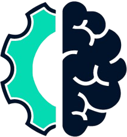

Human Error & Fatigue
- Up to 20 to 30% of defects missed under repetitive, high-volume conditions
- Attention drops over long shifts

Industrial intelligenceTurn any camera on your floor into a deep-learning sensor. Inspect quality, verify assembly, enforce safety, monitor the process and watch for security risks. In real time, 24/7, with human-level accuracy and no fatigue.
Catch what the human eye misses, at production speed, on every part, every shift.
Cameras capture every part in real time as it moves down the line.
Models classify and detect anomalies, defects and missing components.
Alerts, rejection and reporting are triggered automatically.
Vision AI isn't only defect detection. Put the same deep-learning platform behind any camera and turn it into an intelligent sensor for safety, process, logistics and security.
Defects, surface flaws, missing components and dimensional checks: 100% inline, at line speed.
Confirm every fastener, clip, seal and connector is present and correctly placed before the part moves on.
Detect missing helmets, vests, gloves or goggles in real time and alert before anyone enters the line.
Watch restricted or hazardous zones and trigger an alert the moment a person or vehicle crosses the line.
Spot flame colour, fill levels, flow, spatter or abnormal machine behaviour that no fixed sensor captures.
Count parts, packs and pallets, sort by type or grade, and keep live stock and WIP counts automatically.
Read labels, lot codes, serials and barcodes to verify print quality and build a full traceability record.
Analyse operator movement and cycle steps to catch unsafe posture and standardise manual work.
Perimeter watch, unattended-object and abnormal-movement detection across the site, 24/7.
Deep-learning inspection runs inline, 24/7, on every part, with no sampling gaps and no inspector fatigue.
Your good and defective samples are gathered, and the defect classes that matter to your quality gate are labelled.
Deep-learning models are trained and augmented to handle lighting, orientation and rare-defect variation.
Accuracy, false-accept and false-reject rates are measured against your acceptance criteria before go-live.
The model runs inline on the edge device, inspecting every part and triggering sort/alert actions.
New edge cases are fed back and the model is retrained, so accuracy compounds over time.
Illustrative live figures from a sample deployment.
Vision AI isn't a bolt-on island. Every defect and image flows into the same intelligence layer as your machines, so quality sits beside OEE and downtime in one view.
Often far less than expected. Your existing good and defective samples are the starting point, augmented and refined with live feedback from your line.
In many cases yes. Where lighting or resolution needs improvement, the right camera and optics are specified so detection stays reliable at line rate.
The part is flagged and can trigger automatic sorting or rejection, an operator alert, and a traceable record that feeds straight into the quality module.
Send us a sample use case and we'll show you a proof of concept on your own parts.